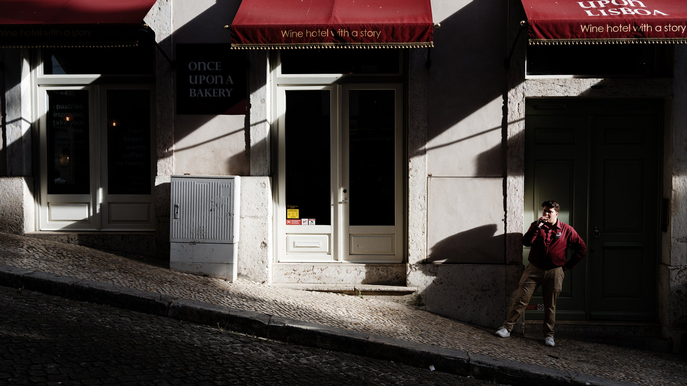
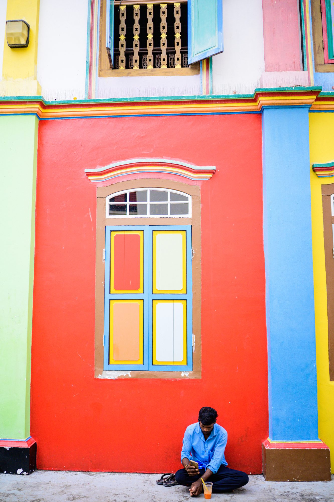
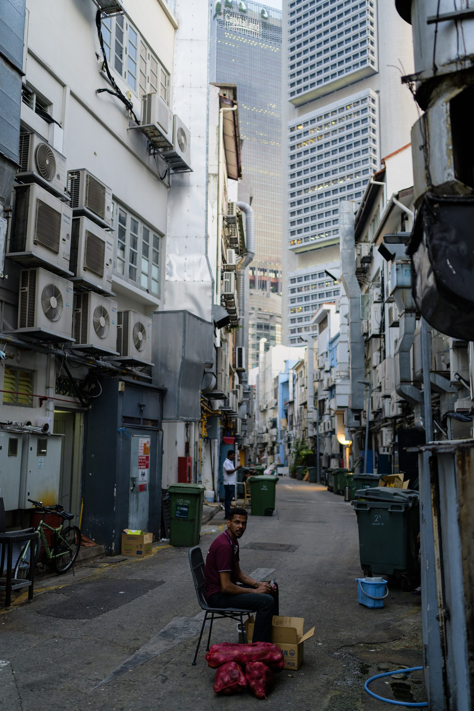
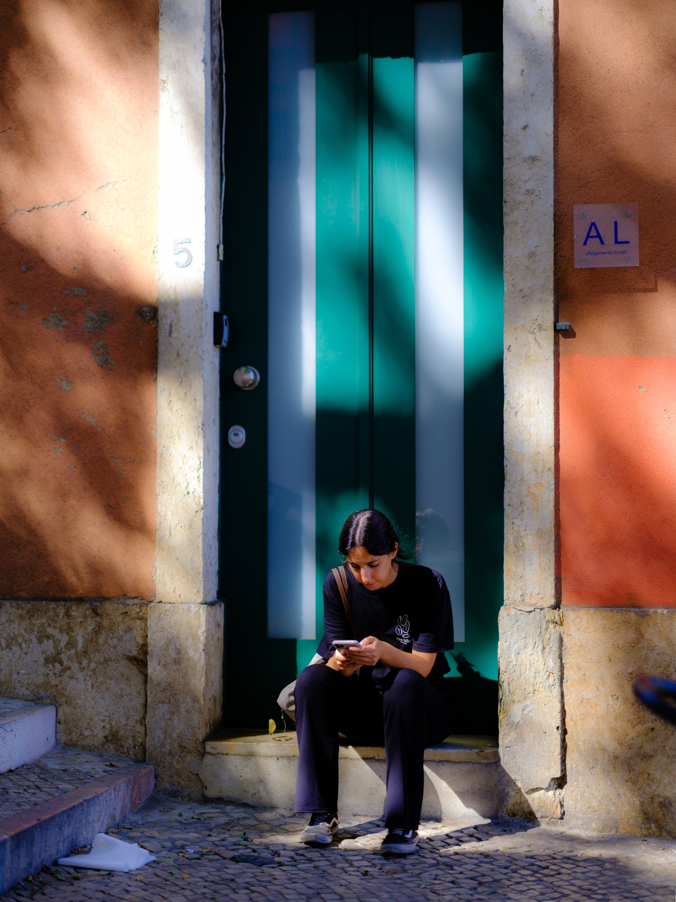
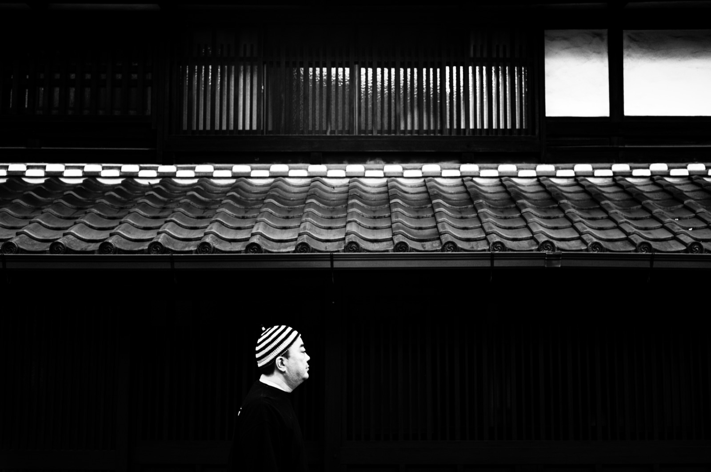
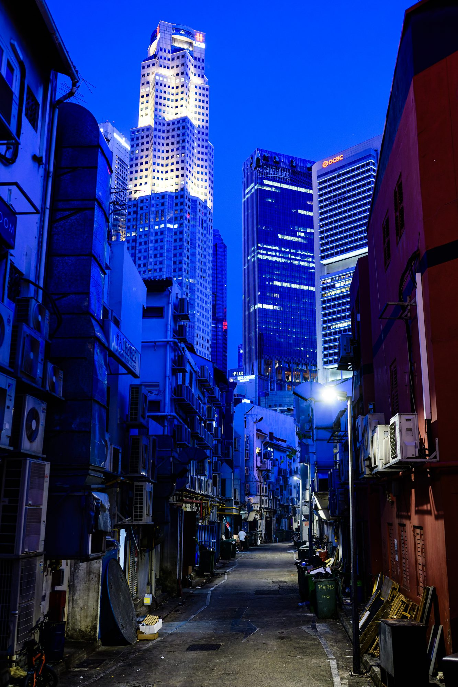
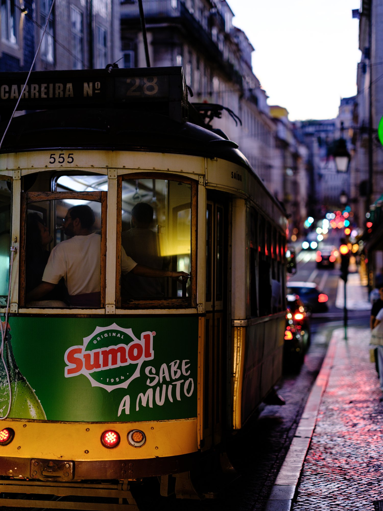
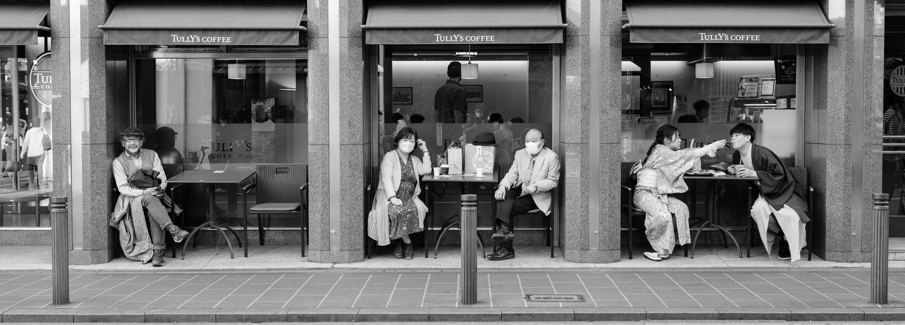
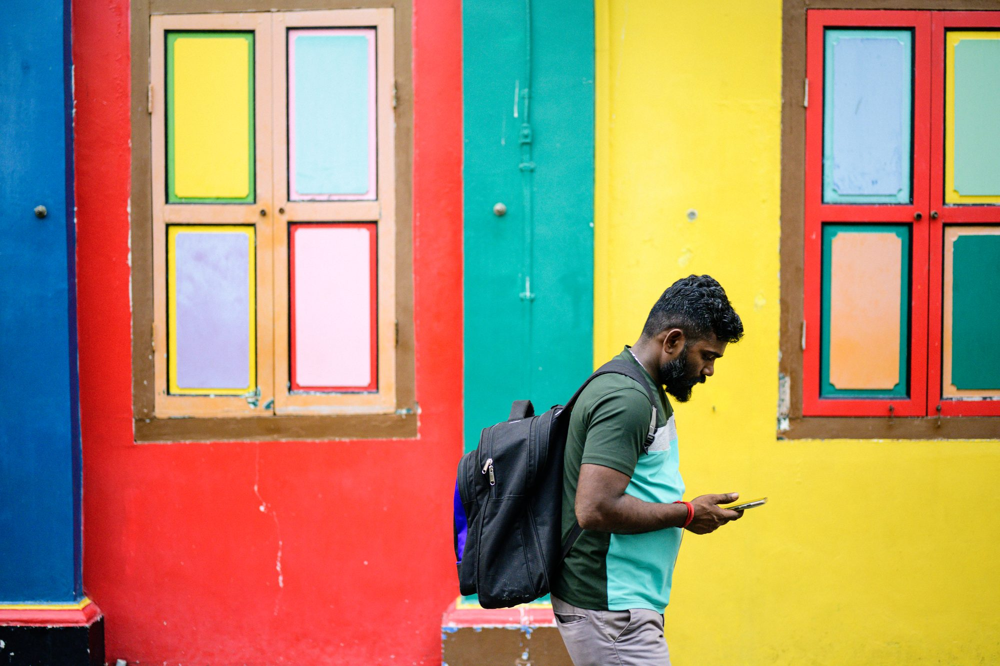

街 · Street photography
街 街 · Machi · Street
台北、京都、里斯本與新加坡。人、影、與一瞬的停格。 Taipei, Kyoto, Lisbon and Singapore. People, shadows, a moment held still.









街
街 · MACHI · STREET · — 枚
以下這些，是許多個日夜裡在台北與京都的街角按下的快門——霓虹下的行人、雨後路面的反光、與擦身而過的一瞬停格。點任一張，在街燈之間慢慢翻閱。